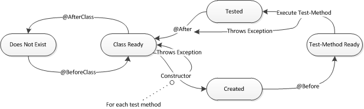
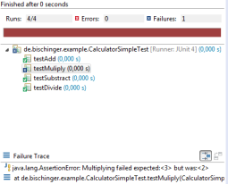

2014-10-30 from Alexander Bischof
Introduction
Most of the Java developers know JUnit for many years and probably use it on a daily basis. But like all things
JUnit evolves and so should we. Especially if your test code lacks in view of readability, understandability and clean code
you should have a closer look at some of the newer features of JUnit.
The upcoming blog series starting with this article covering the JUnit basics
will take a close look on the internals, concepts and best practices of JUnit nowadays.
JUnit (current version 4.11) itself is a test framework which provides some annotations, interfaces and utility classes
which can be used to write test classes, lifecycle methods and test methods that will ensure the correctness of your business code.
It is widely known and used and plays a big role when it comes to continuous integration and agile projects.
Test classes
A test class is just a plain java class and nothing more. In view of JUnit it is managed through a
JUnitRunner which normally provides
a lifecycle.
Like many framework nowadays JUnit follows the CoC (Convention over Configuration)
which basically means that you only have to declare things that are not part of the convention. That way your code keeps small and
therefore is more readable and understandable. Considering JUnit test classes it means that you can provide your own
JUnitRunner but JUnit already
provides a default
JUnitRunner (internally mapped to
BlockJUnit4ClassRunner). This default
JUnitRunner inherits from
ParentRunner which provides you
a lifecycle which is shown in the following image and will be explained further in this article.

But keep in mind that this lifecycle represents only the default lifecycle. If you develop your own
JUnitRunner or using other JUnit-Rules it can be something really different.
But those topics i will cover in another blog post.
Lifecycle methods
A lifecycle method here is a method which is marked with one of the following annotations and can be used to configure your tests.
| Annotation |
Explanation |
| @BeforeClass |
Static methods (can occur multiple times) to initialize things on the test class level. The order is dependent on the
underlying JVM |
| @AfterClass |
Static methods (can occur multiple times) to clean up things on the test class level. The order is dependent on the
underlying JVM |
| @Before |
Non Static methods (can occur multiple times) to initialize things on the test method level. The order is dependent on the
underlying JVM |
| @After |
Non Static methods (can occur multiple times) to clean up things on the test method level. The order is dependent on the
underlying JVM |
As already mentioned above this is just the half truth because since JUnit 4.7 the concept of rules are integrated.
One important point: As you can see in the lifecycle diagram above both (the constructor and
@Before annotated methods) are executed before each
test method and therefore seem to have the same semantic (at least
from the test-method point of view). But there are some important differences to keep in mind:
- It breaks the symmetry between @Before and @After
- If the constructor throws an exception @After is not
executed
- JUnit can be used with several other frameworks (e.g.
Mockito) which rely on the lifecycle at least partially. Therefor using the
constructor for initializing can lead for example to NullPointerExceptions.
Looking at that it is reasonable to say prefer
@Before to the constructor.
One historical note: The usage of annotations is available since JUnit 4.0. Before that you had to follow a naming convention (e.g. test methods
has to start with "test").
Test methods
A test method for JUnit is a non static, public method which is marked with a
@Test annotation. Such a method should contain so
called assertions and/or assumptions (yes - there are use cases with none of them). The difference between them is that a cause of an assertion leads
to a fail of the test method because an AssertionError is thrown. Indeed an assumption also throws an exception (AssumptionViolatedException) but this one
marks the test just as ignored. So an assumption has more the semantic of a useless test which could be the case if you rely on another system
which is not running or cannot be started.
The following table shows the basic assertions which are part of the
Assert class.
| Assert |
Explanation |
| assertTrue |
Checks whether a given condition is true. Fails if condition
is false. Example: assertTrue("User not signed up",user.isSignUp())
|
| assertFalse |
Opposite of assertTrue |
| assertNull |
Checks whether a given object is null. Fails if object is
not null. Example: assertNull(calculator)
|
| assertNotNull |
Opposite of assertNull |
| assertSame |
Checks whether two objects are reference the same object.
Fails if not. Example: assertSame("Hallo Welt", "Hallo " + "Welt")
|
| assertNotSame |
Opposite of assertSame. Example: assertNotSame("Hallo Welt",
new String("Hallo Welt"))
|
| assertEquals |
Checks whether two objects are equal. Example:
assertEquals("Hallo Welt", new String("Hallo Welt"))
|
| assertNotEquals |
Opposite of assertEquals |
| assertArrayEquals |
Checks whether two arrays are identical in length and
elements. Example: assertArrayEquals(new int[]{1,2}, new int[]{1,2})
|
| assertThat |
Makes use of a matcher which describes itself to give
feedback if it fails. Example: assertThat(new String("Hallo Welt"),
equalTo("Hallo Welt"))
|
| fail |
Throws an AssertionError so that the test will fail
|
Also note that every assert method is overloaded with an additional errorMessage
String in front of the parameter list. This is considered best practice because it makes the assertion or assumption more
readable and significant if something goes wrong (FYI: There is also an explicit
PMD-Rule
JUnitAssertionsShouldIncludeMessage for that).
| Assume |
Explanation |
| assumeTrue |
Checks whether a given condition is true. Skips test and marks it as ignored if condition
is false. Example: assumeTrue("User not signed up",user.isSignUp())
|
| assumeFalse |
Opposite of assumeTrue |
| assumeNotNull |
Checks whether one or many given objects are not null. Skips test and marks it as ignored otherwise. Example: assertNull(calculator)
|
| assumeNoException |
Checks whether a given Throwable is not thrown. Otherwise test is skipped and marked as ignored. |
| assumeThat |
Makes use of a matcher to check if a condition is true. If not test is skipped and marked as ignored.
|
At this point i left out the following points because they would blow up this article. So stay tuned and read more
in one of the following topics:
- assertThat with the big topic Matcher
Example
So far i had only covered theory. Now i am giving a simple example which uses annotations.
The calculator here is specialized for integers but could be easily extended for other numeric types. Our functional methods
would be add, subtract, multiply and divide.
public class Calculator {
public int add(int a, int b) {
return a + b;
}
public int subtract(int a, int b) {
return a - b;
}
public int multiply(int a, int b) {
return a * b;
}
public int divide(int a, int b) {
return a / b;
}
}
So far nothing special so let us have a look at the test. I created a test method for each public method of the
calculator and used the
@Before annotated method to initialize the calculator. That way each time before the test method is executed the calculator is newly initialized. The reason for
that is quite simple - i want to eliminate possible side effects in the future (which could occur if i would use
@BeforeClass)
and do not want to violate the DRY (Don't Repeat Yourself) principle (which would occur if i would initialize the calculator in every test
method).
import static org.junit.Assert.assertEquals;
import static org.junit.Assert.fail;
import org.junit.Before;
import org.junit.Test;
public class CalculatorSimpleTest {
Calculator calculator;
@Before
public void setUp() throws Exception {
calculator = new Calculator();
}
@Test
public void testAdd() {
String errorMessage = "Adding failed";
int expected = 3;
int add = calculator.add(1, 2);
assertEquals(errorMessage, expected, add);
// Bad assertTrue(3==calculator.add(1, 2));
// Bad assertSame(3, calculator.add(1, 2));
}
@Test
public void testSubtract() {
String errorMessage = "Subtracting failed";
int expected = -1;
int add = calculator.subtract(1, 2);
assertEquals(errorMessage, expected, add);
}
@Test
public void testMultiply() {
String errorMessage = "Multiplying failed";
int expected = 2;
int add = calculator.multiply(1, 2);
assertEquals(errorMessage, expected, add);
}
@Test
public void testDivide() {
String errorMessage = "Dividing failed";
int expected = 0;
int add = calculator.divide(1, 2);
assertEquals(errorMessage, expected, add);
}
}
As you can see every test method checks an expected value against an
actual computation result. If there is a mismatch an assertion error is
thrown.
If something went wrong (here i changed the expected result of the multiply method) you can see corresponding error message.

ExceptionHandling
Now you are able to develop standard tests and in many cases this
should be sufficient (for the moment :)). But in view of testing
exceptions your test classes can suffer really fast. Considering the
calculator you can see easily that at least the divide method needs one
more test.
@Test
public void testDivide_WithZero_WillFail() {
assertEquals(0, calculator.divide(1, 0));
}
This test will fail because an
ArithmeticException is thrown. But lets assume that this
behavior (throwing the exception) is correct because i want the
client handle the exception. So with a naive small refactoring i can get
this.
@Test
public void testDivide_WithZero_WillFail() {
try {
assertEquals(0, calculator.divide(1, 0));
fail();
} catch (ArithmeticException e) {
// Bad
}
}
Ok, now i have tested the correct behavior but the resulting test code
does not look good. I have boiler-plate code and doubled the size of my previous test code therefore it is less
understandable. A better way to do that is using the
@Test annotation the following way.
@Test(expected = ArithmeticException.class)
public void testDivide_WithZero_WillFail() {
assertEquals(0, calculator.divide(1, 0));
}
This test method only fails if the
ArithmeticException is not thrown.